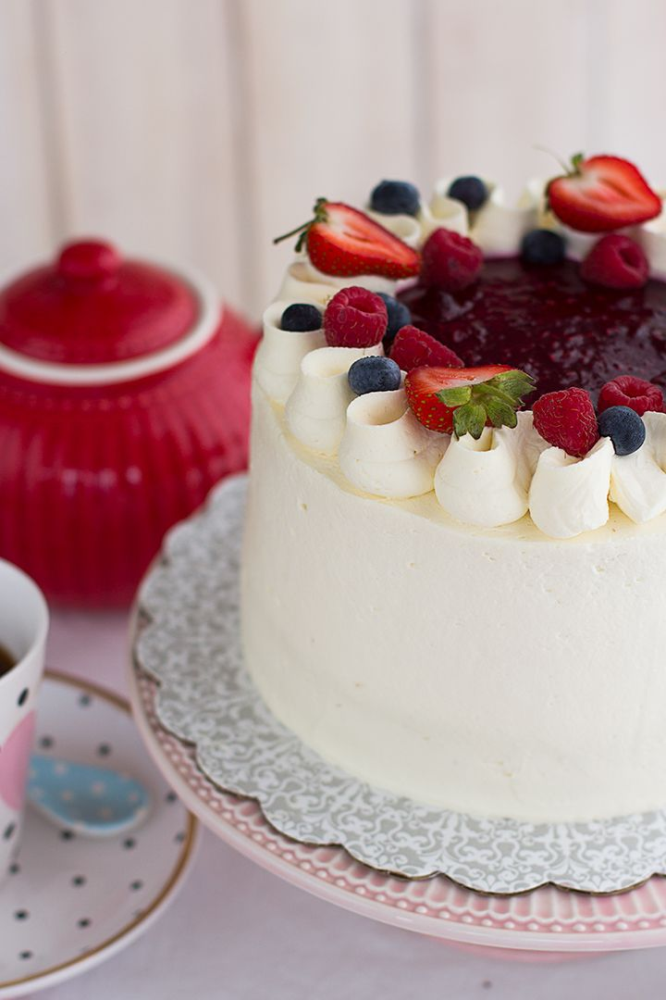

Receta de Torta Red Velvet

üìù Ingredientes:
• 2 tazas de harina
• 1 taza de azúcar
• 1/2 taza de mantequilla
• 2 huevos
• Colorante rojo
üë©‚Äçüç≥ Preparaci√≥n:
1. Precalentar el horno a 180°C.
2. Mezclar los ingredientes secos en un tazón.
3. Batir los ingredientes húmedos en otro tazón.
4. Combinar ambas mezclas y agregar colorante rojo.
5. Verter en un molde y hornear por 30 minutos.
Receta de Torta de Chocolate

üìù Ingredientes:
• 200g de chocolate negro
• 1 taza de harina
• 1/2 taza de mantequilla
• 3 huevos
• 1 taza de azúcar
üë©‚Äçüç≥ Preparaci√≥n:
1. Precalentar el horno a 180°C.
2. Derretir el chocolate y dejar enfriar.
3. Batir la mantequilla con el azúcar hasta obtener una mezcla cremosa.
4. Agregar los huevos uno a uno, mezclando bien después de cada adición.
5. Incorporar el chocolate derretido y mezclar.
6. Verter en un molde y hornear por 25 minutos.
Receta de Torta de Tres Leches
üìù Ingredientes:
• 1 taza de harina
• 1 lata de leche condensada
• 1 lata de leche evaporada
• 1 taza de crema de leche
• 3 huevos
üë©‚Äçüç≥ Preparaci√≥n:
1. Precalentar el horno a 180°C.
2. Preparar un bizcocho esponjoso y hornear.
3. Mezclar las tres leches en un tazón.
4. Una vez que el bizcocho esté frío, perforar con un tenedor.
5. Verter la mezcla de leches sobre el bizcocho.
6. Dejar reposar en el refrigerador por varias horas.
Receta de Torta de Frambuesa
Una torta fresca y esponjosa rellena y decorada con frambuesas naturales y crema, perfecta para quienes disfrutan de un postre frutal y elegante.
üìù Ingredientes:
• 2 tazas de harina
• 1 taza de azúcar
• 1 taza de mantequilla
• 4 huevos
• 1 taza de leche
• 2 tazas de frambuesas frescas
• 1 taza de crema para batir
• 1 cucharadita de polvo de hornear
üë©‚Äçüç≥ Preparaci√≥n:
1. Precalentar el horno a 180°C y engrasar un molde para torta.
2. Batir la mantequilla con el azúcar hasta que esté cremosa.
3. Agregar los huevos uno a uno, batiendo bien después de cada adición.
4. Incorporar la harina y el polvo de hornear alternando con la leche.
5. Verter la mezcla en el molde y hornear por 35-40 minutos.
6. Dejar enfriar, cortar en capas y rellenar con crema batida y frambuesas.
7. Decorar la parte superior con más crema y frambuesas frescas.
Receta de Torta de Arándano

Torta húmeda y esponjosa con arándanos frescos, rellena y decorada con crema y más arándanos, ideal para un postre antioxidante y delicioso.
üìù Ingredientes:
• 2 tazas de harina
• 1 taza de azúcar
• 1 taza de mantequilla
• 4 huevos
• 1 taza de leche
• 2 tazas de arándanos frescos
• 1 taza de crema para batir
• 1 cucharadita de polvo de hornear
üë©‚Äçüç≥ Preparaci√≥n:
1. Precalentar el horno a 180°C y engrasar un molde para torta.
2. Batir la mantequilla con el azúcar hasta que esté cremosa.
3. Agregar los huevos uno a uno, batiendo bien después de cada adición.
4. Incorporar la harina y el polvo de hornear alternando con la leche.
5. Agregar los arándanos frescos a la mezcla.
6. Verter la mezcla en el molde y hornear por 35-40 minutos.
7. Dejar enfriar, cortar en capas y rellenar con crema batida y arándanos.
8. Decorar la parte superior con más crema y arándanos frescos.
Receta de Torta de Oreo

Una torta de chocolate con galletas Oreo trituradas en la masa, rellena y decorada con crema y más Oreos, perfecta para los fanáticos de las galletas.
üìù Ingredientes:
• 2 tazas de harina
• 1 taza de azúcar
• 1 taza de mantequilla
• 4 huevos
• 1 taza de leche
• 1 taza de galletas Oreo trituradas
• 1 taza de crema para batir
• 1/2 taza de cacao en polvo
• 1 cucharadita de polvo de hornear
üë©‚Äçüç≥ Preparaci√≥n:
1. Precalentar el horno a 180°C y engrasar un molde para torta.
2. Batir la mantequilla con el azúcar hasta que esté cremosa.
3. Agregar los huevos uno a uno, batiendo bien después de cada adición.
4. Incorporar la harina, el cacao y el polvo de hornear alternando con la leche.
5. Agregar las galletas Oreo trituradas a la mezcla.
6. Verter la mezcla en el molde y hornear por 35-40 minutos.
7. Dejar enfriar, cortar en capas y rellenar con crema batida y más Oreos.
8. Decorar la parte superior con crema y galletas Oreo trituradas.